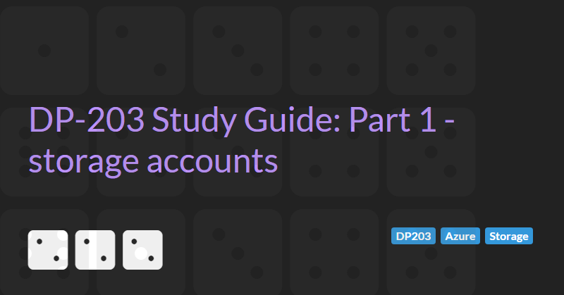

Implementing non-relational data stores
The DP-203: Azure Data Engineering Associate exam requires subject matter expertise in Azure solutions for non-relational data storage. This section of the syllabus includes:
- Azure Storage
- Cosmos DB
- Azure Data Lake
This part 1 guide will cover Azure Storage accounts.
Azure Storage Services Overview
Azure storage consists of the following components:
- Queue storage
- Table storage
- File storage
- Blob storage (also known as Containers)
Blob storage is further composed of 3 types:
- Block blobs
- Append blobs
- Page blobs.
Standard (V2) storage accounts contain all of these components.
Premium storage account only have one. Either File storage, Block blobs, or Page blobs.
Premium performance storage accounts use SSDs for low latency and high throughput.
Redundancy options
Protect data from hardware failures, network or power outages, and natural disasters.
Even in the event of a failure, redundancy ensures storage accounts are available and durable.
Trade-off between cost and availability
- Locally redundant storage (LRS) = 3 synchronous copies in the same data centre (in one availability zone and one region)
- Zone redundant storage (ZRS) = 3 synchronous copies in the three different availability (in one region)
- Geo-redundant storage (GRS) = LRS + asynchronous copy to second region (3 more copies in second region using LRS). The copy in the secondary region can only be accessed when primary region is unavailable and only as a read-only/recovery copy.
- Read-access geo-redundant storage (RA-GRS) - GRS + read access to secondary region (without failure of primary region).
- Geo-zone-redundant storage (GZRS) = ZRS + asynchronous copy to second region (3 more copies in second region using LRS). The copy in the secondary region can only be accessed when primary region is unavailable and only as a read-only/recovery copy.
- Read-access geo-zone-redundant storage (RA-GZRS) - GZRS + read access to secondary region (without failure of primary region).
Blob storage
Binary-large object storage = any type of file.
Use cases:
- Storing file for shared access
- Audio/video streaming
- Storage for analysis (Data Lake Gen2)
- Writing log files
- Storing data for disaster recovery, backup, and archiving.
Blob storage has a flat structure. Each storage account can contain any number of containers and each container can contain any number of files (but containers cannot contain child containers/folders/directories).
Provides a unique namespace in Azure for data (e.g. https://[storage_account_name].block.core.windows.net).
Blob storage is further composed of 3 types:
- Block blobs - large objects that do not use random read/write operations. Files are read from beginning to end (e.g. image files for a website).
- Append blobs - optimised for append operations (e.g. logs). Updating or deleting of existing blocks is not supported.
- Page blobs - optimised for random read/write operations. Provide durable disks for Azure VMs.
Storage access tiers
Data stored in the cloud can be different based on how it is generated, processed, and accessed over its lifetime.
Pricing is based on volume of data stored/month, types of operations performed, number of operations performed, data transfer costs (if any), redundancy options.
Data should be organised based on attributes such as frequency of access and planned retention period.
This allows us to use blob access tiers to further reduce costs.
Blob access tiers are:
- Hot = frequently accessed, low latency, higher access cost
- Cool = infrequently accessed data, high latency, low cost, stored for at least 30 days
- Archive = rarely accessed data (e.g. long term backups), high access time/cost, stored for a least 180 days.
Rules can be defined to move from hot to cool and cool to archived.
Table Storage
A NoSQL key-value store.
No relationships, stored procedures, secondary indexes, or foreign keys.
Supports very large volume of data (data split into partitions)
Rows can have different field values but always have a partition key and row key.
Consider using Cosmos DB as alternative.
Queue Storage
Azure Queue Storage is a service for storing large numbers of messages. You access messages from anywhere in the world via authenticated calls using HTTP or HTTPS. A queue message can be up to 64 KB in size. A queue may contain millions of messages, up to the total capacity limit of a storage account. Queues are commonly used to create a backlog of work to process asynchronously.
Azure File Shares
Allows creation of file shares in the cloud that can be accessed from anywhere with an Internet connection.
File Shares can be mounted concurrently by cloud or on-premise deployments and are accessible from Windows, Linux, and macOS clients.
Supports SMB protocol and NFS protocol.
Data is encrypted at rest, and the SMB protocol ensures the data is encrypted in transit.
Use cases:
- Replace or supplement on-premise file servers
- Share application settings
- Install Dev/Test/Debug tools and share across multiple VMs.
Key benefits:
- Shared access - replace on-premise file shares with Azure file shares without application compatibility issues.
- Fully managed - Azure will manage hardware and OS.
- Resiliency - no local power/network issues.
Provides a unique namespace in Azure for data (e.g. https://[storage_account_name].file.core.windows.net).
Files can be accessed by connecting the file share to local system (click [connect] on Azure portal).
Disk Storage
High performance, highly durable block storage for Azure Virtual Machines.
By default Disks are created in a hidden storage account and managed by Azure (managed disks).
When creating a Disk it is possible (in the advanced options) to create unmanaged disks that can be created in any storage account (this is not recommended and managed disks should be used).
- VMs used disks as place to store operation system, applications, and data.
- One VM must have one OS disk and can have multiple Data disks.
- A data disk can only be linked to one VM.
- Both OS and data disks are virtual hard disk (VHD) files stored in an Azure storage account.
- VHDs are stored as page blobs in standard or premium storage accounts.
Managed disk types:
- Standard HDD - backup, non-critical, infrequent access.
- Standard SSD - lightly used production applications or dev/test environments.
- Premium SSD - super fast high performance, very low latency, recommended for production systems and performance sensitive workloads.
- Ultra SSD - for the most demanding IO intensive workloads such as SAP HANA, databases (SQL server, Oracle etc.), and other transaction heavy workloads.